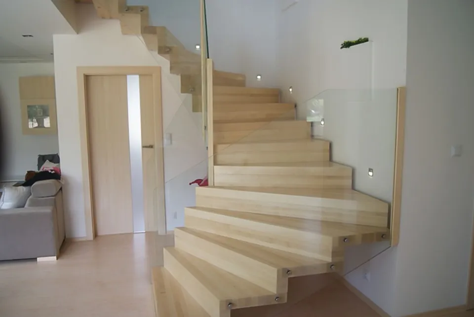

Strona główna / Realizacje
Realizacje schodów i filmy
Schody, które zaprojektowaliśmy, wykonaliśmy i zamontowaliśmy u klientów - zdjęcia według rodzaju i nagrania z gotowych realizacji.
Zdjęcia realizacji
Wybierz rodzaj schodów. Kliknij zdjęcie, aby je powiększyć - w powiększeniu można przewijać palcem lub strzałkami.
Filmy z realizacji
Krótkie nagrania z gotowych schodów - widać na nich to, czego nie odda zdjęcie: światło na stopniach, przejścia i wykończenie balustrad. Film pobiera się dopiero po kliknięciu, domyślnie bez dźwięku.
Kontakt i wycena
Proszę opisać, jakie schody Państwo planują - oddzwonimy, doradzimy i umówimy pomiar.
- Telefon
- Adresul. Zapłocie 17A, 63-313 Chocz
- Zasięgcała Polska i Niemcy, m.in. Wielkopolska, Warszawa i Mazowsze, Wrocław
Chocz, ul. Zapłocie 17A
Mapa Google zapisuje własne pliki cookies, dlatego wczytujemy ją po zgodzie.